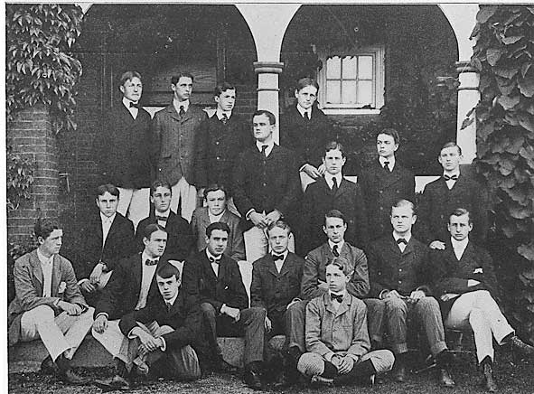

Early Life
This is a photo of FDR with his dad when he was 4 years old.
Born: January 30, 1882 in Hyde Park, NY
Parents:
James Roosevelt & Sara Delano
His dad was a business owner and his mom was the main person that raised him.
He has no siblings.
He grew up in a wealthy family
Theodore Roosevelt's fifth cousin
Married his fifth cousin Eleanor Roosevelt (1905) & had 6 kids
Education

This is his class in Groton School.
He was homeschooled until he was a teenager.
Groton School:
Private school for the wealthy
Harvard College
- Did many extracurricular activities which led to his average grades
- Declared himself as a democrat while looking up to Theodore Roosevelt who was a Republican
- Editor of student newspaper
- Graduated with a degree in History
Columbia Law School
- Disliked being a lawyer
- Did not earn a degree
- Passed the bar exam and worked at a law firm in NYC.
Admired Theodore Roosevelt which led him to go into politics